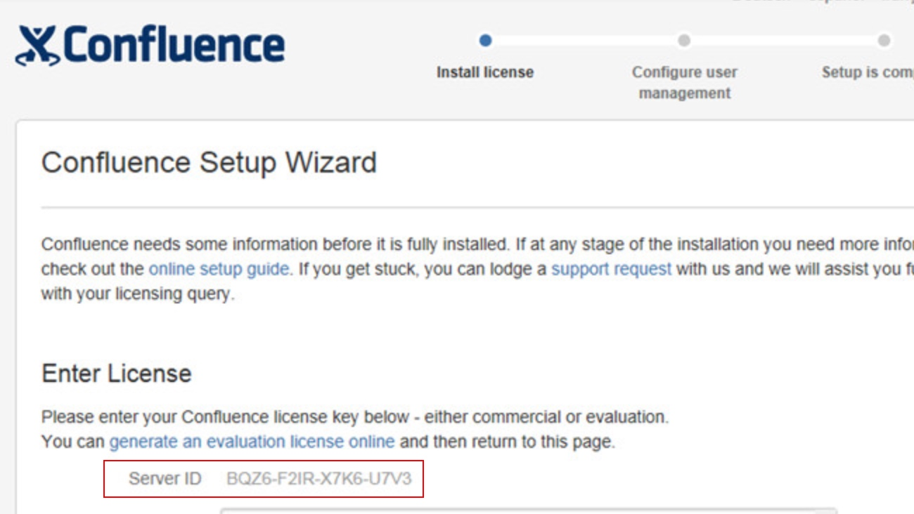
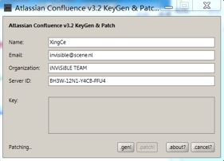

数据库安装
安装过程略，这里选用的是Percona MySQL 5.7。
注意my.cnf的配置文件需要额外配置，特别是默认编码必须为UTF8:
1 | [mysqld] |
然后创建业务用户和数据库，都是confluence。
Confluence 安装
安装可以使用docker或者下载安装包，已内置JRE，选择自定义安装，选择/data/confluence 作为文档存储仓库目录，其他都选择默认。
然后用yum安装Nginx，确定弹性外网IP可以访问Nginx测试主页。
开始准备域名和配置Nginx的Tomcat代理转发。
花生壳域名申请
注册花生壳账号，然后下载Linux客户端
域名帮助可以查看官方文档
最后测试域名是否能正常访问。
代理转发的配置
以下配置中的域名236362tXXXX.imwork.net就是上一步申请的域名。
nginx.conf 主要转发配置如下(以下配置方法可以在Confluence官网找到)：
1 | server { |
修改完成后执行ngnix -s reload。
Tomcat 配置修改(/opt/atlassian/confluence/conf/server.xml):
1 | <Connector port="8090" connectionTimeout="20000" redirectPort="8443" |
修改完重启confluence: systemctl restart confluence
测试代理是否能访问confluence，这里会出现需要输入验证码的提示，找到机器码，后面破解需要用到。

破解及安装配置
- 下载破解用的压缩包: confluence5.x-crack.zip，然后解压。
- 将/opt/atlassian/confluence/lib 下的atlassian-extras-decoder-v2-3.2.jar，将其改为atlassian-extras-2.4.jar，由于Linux上没有图形界面，可以将这个jar包拷贝出来到本地目录(就是第一步解压之后的目录中，替换原有的atlassian-extras-2.4.jar)
- 由于confluence默认使用PostgreSQL，如果使用MySQL作为Confluence数据库会缺少MySQL JDBC驱动，所以需要下载mysql-connector-java-5.1.X-bin.jar 的jar包，将之放到/opt/atlassian/confluence/lib下备用。注意不要下载最新的MySQL驱动，不然会有兼容问题。
- 双击破解包里面的confluence_keygen.jar，将记录下来的Service ID 输入，name可以随意填写。如果无法双击打开可以用命令行命令
java -jar confluence_keygen.jar打开。点击【.gen】生成key，复制key备用。

- 生成key之后点击【.patch】，选中atlassian-extras-2.4.jar，然后把打完补丁包的atlassian-extras-2.4.jar重命名为atlassian-extras-decoder-v2-3.2.jar放到/opt/atlassian/confluence/lib路径下。
修改Confluence的JVM大小，优化性能。在/opt/atlassian/confluence/bin/setenv.sh 中修改这一行:
CATALINA_OPTS="-Xms4096m -Xmx4096m -XX:+UseG1GC ${CATALINA_OPTS}"然后重启confluence后访问，输入key可以正常通过验证。
- 注意选择数据库类型时选MySQL，输入用户名密码之类的字段，之后没什么好说的比较简单，安装结束。
增加https 证书
可以使用Let's Encrypt 免费https证书完成认证。以下是安装和配置https的过程:
Let’s Encrypt 官方网站：https://letsencrypt.org/
其他遇到的问题
预览文档出现方框或者乱码，原因是没有安装中文字库，可以从Windows 机器里面的C:\Windows\fonts 下拷贝几种典型的中文字体到Linux。在/opt/atlassian/confluence/bin/setenv.sh中增加一行引用:
CATALINA_OPTS="-Dconfluence.document.conversion.fontpath=/usr/share/fonts/windowsFonts/ ${CATALINA_OPTS}"
需要重启Confluence。参考: https://blog.csdn.net/qq_30408111/article/details/78297321